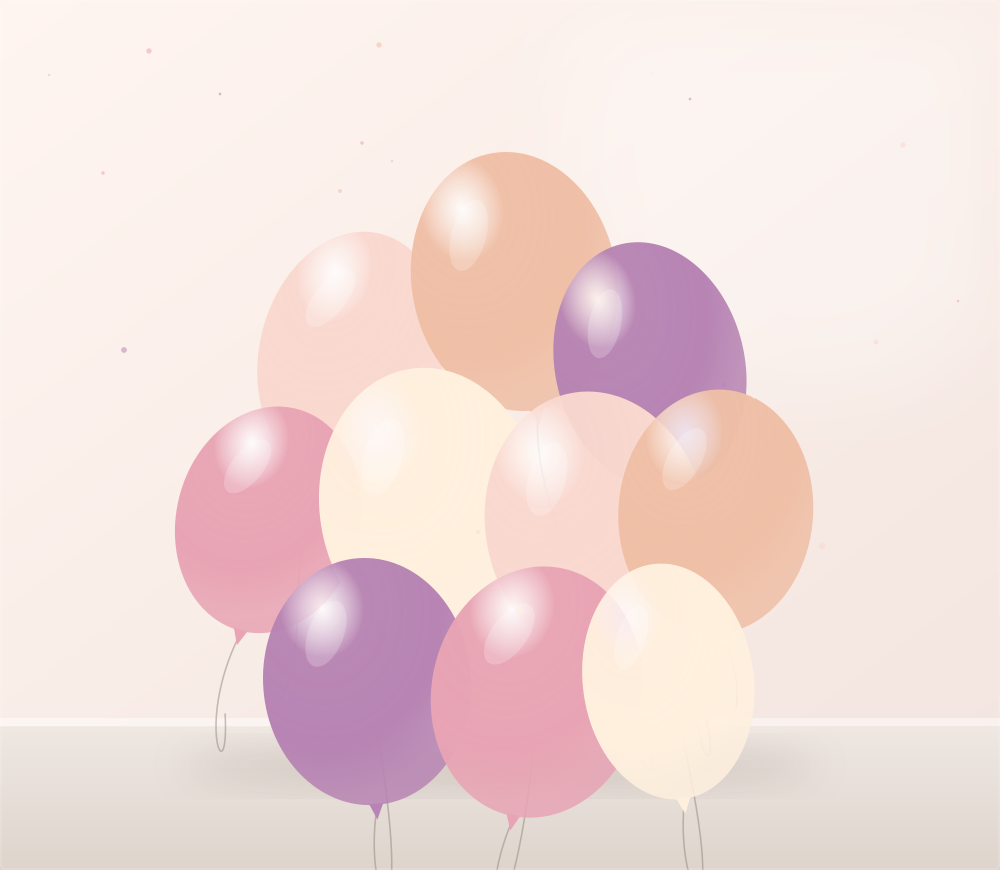
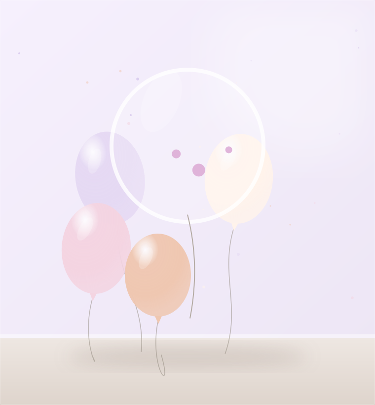

Воздушные шары · Тверь
У каждого
праздника
есть своё чудо.
Нежные букеты, яркие сюрпризы и оформление, которое хочется фотографировать. Соберём историю из шаров специально для вашего дня.
✳Найдём настроение для
любого счастливого поводаДоставка и время
по согласованию
любого счастливого поводаДоставка и время
по согласованию
СОБРАНО С ЛЮБОВЬЮ ↗

маленькоесчастьев каждом шарике✳
Иллюстрация · Пример композицииДЕНЬ РОЖДЕНИЯ✳СЮРПРИЗЫ✳ПЕРВЫЕ ВСТРЕЧИ✳ФОТОЗОНЫ✳ПРОСТО ТАК
Под настроение
Повод найдётся.
Чудо — тоже.
Каждый праздник — особенный. Мы собрали идеи, которые легко сделать своими.
Все композицииДля вашего вдохновения
Немножко волшебства
уже в каталоге.
Выберите понравившуюся композицию или используйте её как вдохновение для своего набора.
Перейти в каталогВсе изображения — авторские эскизы. Названия, комплектация и цены демонстрационные.

палитра вашего настроения ✳
Можно совершенно по-своему
А если сделать
по вашим правилам?
Всё самое красивое начинается с идеи. Выберите любимые цвета, число шаров и важную дату — мы подготовим понятную заявку для мастерской.
✳ЦветаОт нежных пастельных до ярких
✳ПоводДень рождения, выписка, сюрприз
✳ДеталиНадпись, цифра, пожелания
Больше, чем букет
Красивые моменты
хочется продлить.
От первого вдохновения до декора на самом празднике — каждая деталь имеет значение.
Оформление мероприятийВсё просто
Счастье не
требует сложностей.
Не нужно знать названия всех шаров. Достаточно рассказать, какой праздник вы задумали.
ВыбираетеНайдите набор в каталоге или соберите свой вариант.✳
РассказываетеУкажите дату, желаемые цвета и детали заказа.✳
СогласовываетеМастерская подтверждает наличие, итоговую цену и доставку.✳